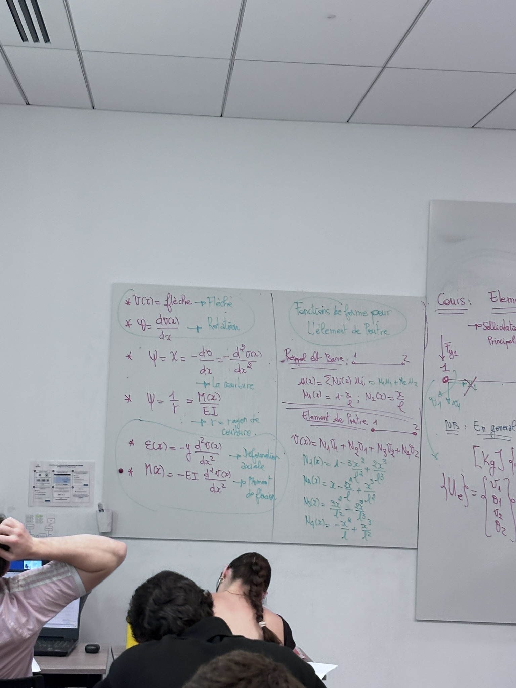
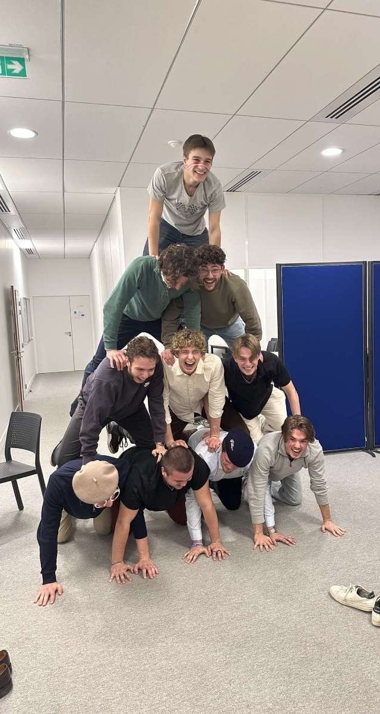

BUILDERS École d'Ingénieurs
Le cycle ingénieur BTP sur le campus AURA, orientation bâtiment. Calcul de structures, maquette numérique, étude de prix, et la création du premier BDE du campus.

La formation Cycle ingénieur, orientation bâtiment
BUILDERS École d'Ingénieurs forme des ingénieurs bâtiment et travaux publics. Je suis sur le campus AURA de Vaulx-en-Velin depuis 2024, actuellement en deuxième année de cycle ingénieur, orientation bâtiment.
Le cursus couvre le calcul de structures, les matériaux, la thermique, l'étude de prix, la gestion de chantier et la maquette numérique, avec une part importante de projets menés en groupe.
Ce que j'y ai construit Projets
- Maquette 3D des nouveaux locaux de l'école. Modélisation du projet AURA en parallèle du chantier réel, avec des réunions hebdomadaires aux côtés de l'architecte et de la maîtrise d'ouvrage. Le projet qui a scellé mon orientation vers le BIM.
- Projet d'étude de prix et de métré. Quantitatif complet, déboursés secs, coefficient de vente et constitution d'une offre.
- TEP Revit Challenge. Conception et modélisation d'un campus à EuropaCity : deux bâtiments aux volumes organiques, passerelle, LOD 300 et géoréférencement en Lambert 93.
- Outils de dimensionnement Eurocodes. Classeurs de calcul générés en Python pour le béton armé et la construction métallique, avec bibliothèques de sections.
En images ✏️ assets/img/parcours/



Le Riptide Responsable communication
J'ai été responsable communication du Riptide, le tout premier bureau des étudiants du campus AURA. Créer un BDE de zéro, c'est un projet de gestion déguisé en campagne étudiante : construire une identité visuelle, tenir un budget, négocier avec des partenaires et livrer des événements à date.
Côté communication, j'ai pris en charge l'identité, les visuels et la présence en ligne. C'est aussi là que mon travail de design a trouvé une application directe.
Ce que j'en retiens
L'école m'a donné les méthodes, l'associatif m'a appris à les faire tenir dans un planning avec des gens qui ne sont pas payés pour être là.